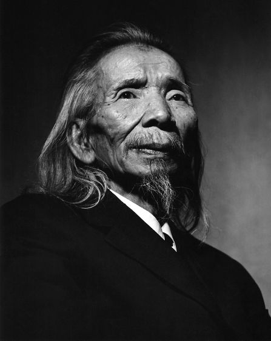

Tiết 21: Tập đọc nhạc số 5: Làng tôi
Nhạc và lời: Văn Cao
Yêu cầu:
_ Xem video lần 1, nghe kỹ phần giai điệu mẫu.
_ Xem video lần 2, xướng âm nốt đúng cao độ và trường độ như giai điệu.
_ Kết hợp đọc nốt và hát lời.
Tác giả: Văn Cao
_ Văn Cao tên thật là Nguyễn Văn Cao, sinh 15/11/1923 tại Lạch Tray (nay là phường Lạch Tray, quận Ngô Quyền), thành phố Hải Phòng, nhưng quê gốc ở thôn An Lễ, xã Liên Minh, huyện Vụ Bản, tỉnh Nam Định. Ông là một nhạc sĩ, họa sĩ, nhà thơ, chiến sĩ ái quốc cách mạng người Việt Nam. Ông là tác giả của ca khúc Tiến quân ca là quốc ca chính thức của nước Việt Nam Dân chủ Cộng hòa nay là Cộng hòa xã hội chủ nghĩa Việt Nam, đồng thời ông cũng là một trong những cây bút có sức ảnh hưởng lớn nhất của nền Tân nhạc Việt Nam. Ông được giới chuyên môn và công chúng yêu nhạc đánh giá một cách rộng rãi là một trong ba nhạc sĩ nổi bật nhất của nền âm nhạc hiện đại Việt Nam trong thế kỷ XX, cùng với Phạm Duy và Trịnh Công Sơn.
_ Văn Cao sáng tác không nhiều. Sự nghiệp âm nhạc của Văn Cao được chia làm hai mảng chính: tình ca và hùng ca. Ngoài ca khúc, ông còn viết một số tác phẩm khí nhạc dành cho piano như Sông Tuyến, Biển đêm, Hàng dừa xa... tổ khúc giao hưởng Anh bộ đội cụ Hồ...
_ Ông tham gia kháng chiến chống thực dân Pháp từ những năm 1930 và lập được nhiều chiến công góp phần vào thắng lợi của cuộc kháng chiến. Sau kháng chiến, ông trở về Hà Nội làm việc ở Đài phát thanh.
_ Sức khỏe của Văn Cao suy yếu nhanh trong những năm cuối đời. Ông không còn ăn được cơm mà chuyển sang ăn bột ngũ cốc do các cơ quan nội tạng bị hư hỏng nặng. Tuy nhiên, ông chưa bao giờ bỏ được thú vui uống rượu có từ thời trẻ.
Ngày 10/7/1995, sau một thời gian mắc bệnh ung thư phổi, Văn Cao mất tại bệnh viện Hữu Nghị, Hà Nội.
_ Tác phẩm: Thiên thai, Làng tôi, Mùa xuân đầu tiên, Suối mơ, Trường ca Sông Lô...